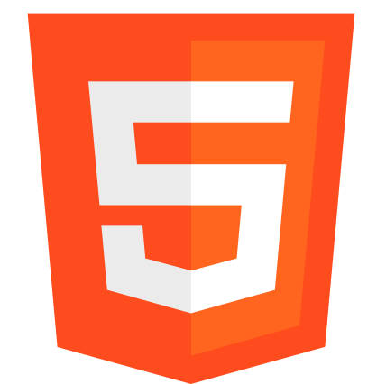
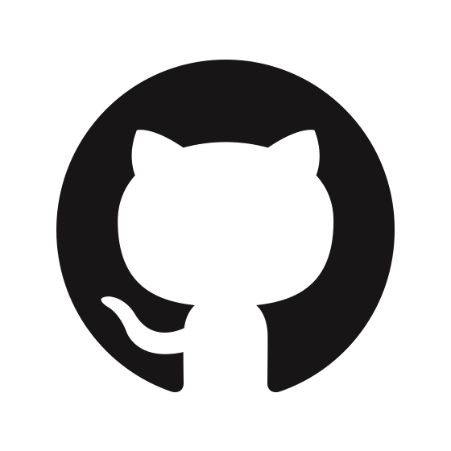

Meu nome é Ana clara, minha primeira formação é Odontologia, e hoje estudo e pratico desenvolvimento web. Atualmente tenho me dedicado a projetos pessoais que possa praticar e mostrar meus conhecimentos, visando sempre desenvolver interfaces modernas, semanticas, responsivas, entregando alta qualidade e visando performance.
Ana Clara Mota
Desenvolvedora frontend e dentista =)Veja o que já fiz.
-
Projeto Siga
Projeto de interface completa de uma escola, feito em HTML, Sass e JavaScript entrega muitas funcionaliidades para um ambiente de aprendizado.
Visitar projeto -
Projeto Motorrad
Página de vendas de motos, com menus, abas, carousel de imagens, feito em HTML, Sass, bootstrap e JavaScript, entrega fluidez e modernidade.
Visitar projeto -
Projeto Telecine
Projeto feito como um clone de site institucional, completo, intuitivo, responsivo e garantindo uma interface fiel aquela proposta.
Visitar projeto -
Projeto Cadastro
Projeto feito como um clone de site institucional, completo, intuitivo, responsivo e garantindo uma interface fiel aquela proposta.
Visitar projeto -
Projeto RAM
Projeto feito como um clone de site institucional, completo, intuitivo, responsivo e garantindo uma interface fiel aquela proposta.
Visitar projeto -
Projeto juros
Projeto feito como um clone de site institucional, completo, intuitivo, responsivo e garantindo uma interface fiel aquela proposta.
Visitar projeto
Conhecimentos
- 
-


- 